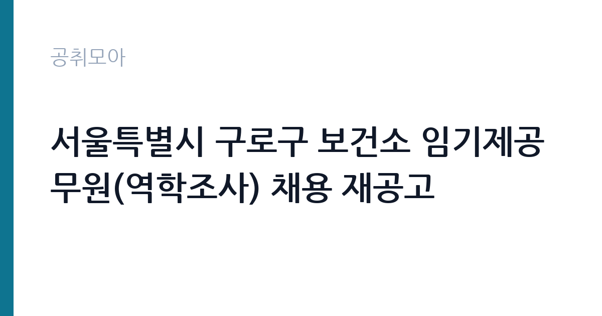

[지자체] 서울특별시 구로구 보건소 임기제공무원(역학조사) 채용 재공고
서울특별시 구로구 보건소 · 서울 · 마감 2026-10-06 (D-15) · 출처 나라일터

한눈에 보는 모집 조건
| 기관 | 서울특별시 구로구 보건소 |
|---|---|
| 공고명 | 서울특별시 구로구 보건소 임기제공무원(역학조사) 채용 재공고 |
| 고용형태 | 임기제 |
| 근무지 | 서울 |
| 게시일 | 2026-09-22 |
| 마감일 | 2026-10-06 (D-15) |
지원자격, 이렇게 읽으세요
- 임기제8급(역학조사) 1명
- 접수 ~2026-10-06 마감
- 세부 조건은 원문 공고문 확인
임기제 8급 상당의 역학조사 분야이므로, 보건·의료 관련 면허나 역학조사 실무 경력이 응시요건의 중심이 된다. 간호사, 임상병리사, 보건 관련 학위와 경력 같은 요건이 걸리는 구조가 일반적이다. 재공고에서는 1차 공고보다 응시요건이 완화된 경우가 많으니, 1차 공고문을 봤던 사람도 이번 공고문의 자격 항목을 처음부터 다시 읽어야 한다. 경력 인정 범위와 면허 필수 여부를 원문에서 확정하는 것이 우선이다.
이 공고의 포인트
이 공고의 가치는 서울시 자치구 보건소라는 근무지에 있다. 역학조사관은 감염병예방법에 근거한 법정 실무를 수행하는 자리로, 감염병 발생 시 현장 역학조사와 접촉자 관리, 조사서 작성까지 전 과정을 맡는다. 코로나19 이후 각 자치구가 역학조사 인력을 임기제로 확보하는 흐름이 이어지고 있으며, 이 경력은 이후 다른 보건소나 질병관리청 관련 자리로 이어지는 발판이 된다.
전형은 어떻게 진행되나
전형은 서류전형과 면접시험으로 진행되는 것이 일반적이다. 서류에서는 임기제 8급 상당의 자격요건 충족 여부와 보건 분야 경력을 검증하고, 면접에서는 역학조사 실무 이해도와 현장 대응 역량을 본다. 재공고는 일정이 촉박하게 돌아가는 경우가 많으므로, 접수 마감일과 면접 예정일을 원문 공고문에서 확인하고 서류를 서둘러 준비해야 한다.
이런 분께 추천해요
- 간호사·임상병리사 등 보건의료 면허를 보유하고 감염병 대응 업무에 관심 있는 사람
- 보건소나 검역소, 질병관리청 관련 기관에서 역학조사·감염병 관리 경력을 쌓은 사람
- 서울 서남권 거주로 구로구 보건소 출퇴근이 수월하고 임기제 경력을 시작하려는 사람
지원 전 체크리스트
- 응시요건의 면허·학위·경력 항목 중 본인 해당분을 확정하고 증빙 서류를 준비한다
- 재공고문이라 1차 공고와 요건이 달라졌을 수 있으니 변경 여부를 대조한다
- 경력증명서의 담당 업무가 역학조사·감염병 관련으로 기재됐는지 확인한다
- 접수 마감일(10월 6일)과 접수처, 면접 일정과 장소를 원문에서 확인한다
모집 일정과 제출 타이밍
접수는 2026년 10월 6일에 마감된다. 임기제 공무원 채용은 서류전형 합격자 발표 후 면접시험까지 10월 중에 마무리되고, 10월 말에서 11월 초 사이에 임용되는 흐름이 일반적이다. 재공고는 기관도 결원을 빨리 채워야 하는 상황이라 일정이 더 빠듯할 수 있다. 정확한 전형 일정과 임용 예정일은 원문 공고문에서 확인해야 한다.
직무 이해하기: 지자체
역학조사관의 하루는 감염병 신고 접수와 현장 출동으로 돌아간다. 확진자 발생 시 이동 동선을 파악하고 접촉자를 분류하며, 역학조사서를 작성해 방역 조치를 연결하는 것이 핵심 업무다. 평시에는 감염병 감시체계 운영과 표본감시 자료 분석, 집단발병 대비 훈련과 민원 응대를 맡는다. 감염병예방법과 자치구 지침이 업무의 법적 근거이므로, 법령과 매뉴얼을 손에 익히는 것이 실무 적응의 지름길이다.
자기소개서 작성 팁
응시원서와 자기소개서에서는 현장 경험을 앞세워야 한다. 감염병 대응이나 보건 민원 응대, 검체·검사 협업 경험을 구체적 장면으로 쓰는 것이 좋다. 재공고 지원이라면 왜 이 시점에 지원하는지, 임용 즉시 현장에 투입될 수 있다는 점을 강조하는 구성이 설득력이 있다. 보건소는 협업 조직이므로 타 부서·유관기관과 조율한 경험을 넣으면 가점이 된다.
면접 준비 포인트
면접에서는 감염병 발생 시나리오 질문이 단골이다. 집단 설사 환자 발생, 결핵 집단발병 같은 상황을 주고 초동 조치 순서를 묻는 식이다. 신고 접수부터 현장 조사, 검체 의뢰, 접촉자 관리, 결과 보고까지의 흐름을 말로 정리할 수 있어야 한다. 보건소 특성상 민원 응대 태도와 야간·주말 비상근무에 대한 의지도 확인하므로, 솔직하고 단호한 답변을 준비해야 한다.
급여·근무조건 읽는 법
정확한 보수액은 원문 공고문의 보수 항목에서 확인해야 한다. 참고로 인사혁신처가 2025년 12월 30일 확정한 2026년 공무원 보수 인상안에 따르면 7~9급 초임 보수는 6.6% 인상되어 9급 초임 연 3,428만 원(월 평균 286만 원) 수준이다. 임기제 8급은 8급 상당의 보수표에 정액급식비, 직급보조비 등 수당이 더해지는 구조가 일반적이다. 임기제 특성상 성과연봉이나 가산금이 어떻게 적용되는지는 원문에서 확인하기 바란다. 경쟁률은 공개되지 않으므로 원문에서 확인해야 한다.
자주 묻는 질문
- 임기제 공무원의 임기는 어떻게 되나요?
임기제공무원은 임용 시 정해진 임기 동안 근무하며, 성과에 따라 연장되는 구조가 일반적이다. 정확한 임기와 연장 조건은 원문 공고문에서 확인해야 한다. - 재공고라서 요건이 달라졌나요?
재공고에서는 응시요건이나 전형 방법이 조정되는 경우가 많다. 1차 공고문을 기준으로 판단하지 말고 이번 공고문의 자격 항목을 처음부터 다시 읽어야 한다. - 야간이나 주말 근무도 하나요?
감염병 발생 시에는 비상근무 체계가 가동되므로 시간 외 근무가 발생할 수 있다. 당직·비상근무 수당과 보상 체계는 원문과 구로구 규정을 확인해야 한다.
함께 보면 좋은 공고
[지자체] 2026년 제1회 세종특별자치시 개방형직위(보건소장) 임용시험 시행계획 재공고 — 마감 2026-10-13[지자체] 2026년 제1회 전남광주통합특별시 북구의회 일반임기제공무원(정책지원관) 임용시험 공고 — 마감 2026-10-12[지자체] 2026년 제10회 화성시 지방임기제공무원 채용시험 시행계획 공고 — 마감 2026-10-02출처: 나라일터 공개정보를 바탕으로 공취모아가 정리한 안내글입니다. 모집 조건·일정은 변경될 수 있으니 지원 전 반드시 원문 공고문을 확인하세요. 본 글은 정보 제공용이며 합격을 보장하지 않습니다.